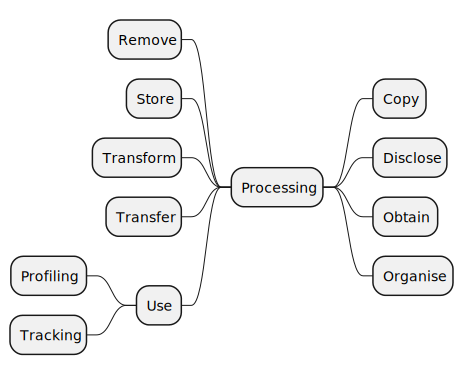
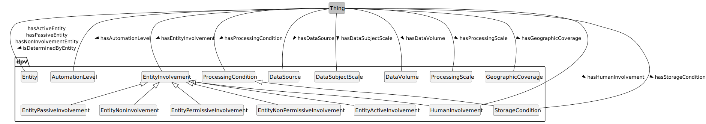
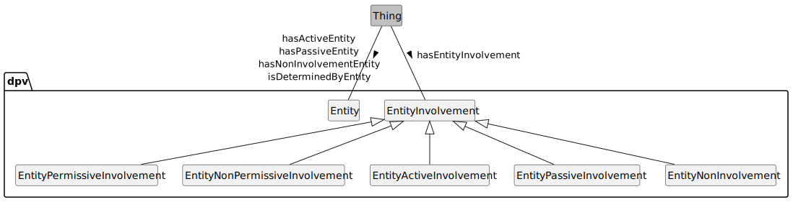

Contributors: (ordered alphabetically) Arthit Suriyawongkul(ADAPT Centre, Trinity College Dublin),
Axel Polleres(Vienna University of Economics and Business),
Beatriz Esteves(IDLab, IMEC, Ghent University),
Bud Bruegger(Unabhängige Landeszentrum für Datenschutz Schleswig-Holstein),
Damien Desfontaines(No affiliation provided),
Danielle Welter(University of Luxembourg),
David Hickey(Dublin City University),
Delaram Golpayegani(ADAPT Centre, Trinity College Dublin),
Elmar Kiesling(Vienna University of Technology),
Fajar Ekaputra(Vienna University of Technology),
Georg P. Krog(Signatu AS),
Harshvardhan J. Pandit(AI Accountability Lab (AIAL), Trinity College Dublin),
Iain Henderson(JLINC Labs),
Javier Fernández(Vienna University of Economics and Business),
Julian Flake(University of Koblenz),
Julio Hernandez(Dublin City University),
Mark Lizar(OpenConsent/Kantara Initiative),
Maya Borges(Danish Agency for Digitisation),
Paul Ryan(Uniphar PLC),
Piero Bonatti(Università di Napoli Federico II),
Rana Saniei(Universidad Politécnica de Madrid),
Rob Brennan(University College Dublin),
Rudy Jacob(Proximus),
Simon Steyskal(Siemens),
Steve Hickman(Epistimis LLC).
NOTE: The affiliations are informative, do not represent formal endorsements, and may be outdated as this list is generated automatically from existing data.
This document provides additional details and examples for processing and processing context concepts in the Data Privacy Vocabulary [[DPV]], and is a companion to the [[DPV]] specification.
DRAFT RELEASE This is draft release intended for review.
DPV Specifications: The [[DPV]] is the core specification within the DPV family, with the following extensions: Personal Data [[PD]], Locations [[LOC]], Risk Management [[RISK]], Technology [[TECH]] and [[AI]], [[JUSTIFICATIONS]], [[SECTOR]] specific extensions, and [[LEGAL]] extensions modelling specific jurisdictions and regulations. A [[PRIMER]] introduces the concepts and modelling of DPV specifications, and [[GUIDES]] describe application of DPV for specific applications and use-cases. The Search Index page provides a searchable hierarchy of all concepts. The Data Privacy Vocabularies and Controls Community Group (DPVCG) develops and manages these specifications through GitHub. For meetings, see the DPVCG calendar.
Contributing: The DPVCG welcomes participation to improve the DPV and associated resources, including expansion or refinement of concepts, requesting information and applications, and addressing open issues. See contributing guide for further information.
Introduction

DPV’s taxonomy of processing concepts reflects the variety of terms used to denote processing activities or operations involving personal data, such as those from [GDPR] Article.4-2 definition of processing. Real-world use of terms associated with processing rarely uses this same wording or terms, except in cases of specific domains and in legal documentation. On the other hand, common terms associated with processing are generally restricted to: collect, use, store, share, and delete.
DPV provides a taxonomy that aligns both the legal terminologies such as those defined by GDPR with those commonly used. For this, concepts are organised based on whether they subsume other concepts, e.g. [=Use=] is a broad concept indicating data is used, which DPV extends to define specific processing concepts for [=Analyse=], [=Consult=], [=Profiling=], and [=Retrieve=]. Through this mechanism, whenever an use-case indicates it consults some data, it can be inferred that it also uses that data.
For concepts related to expressing contextual information associated with processing, such as storage conditions, automation, scale, see Processing Context and Processing Scale sections.
The definitions for describing and interpreting each processing concept is based on the following sources: language dictionaries (predominantly Oxford English), use of the term within legal documents (e.g. GDPR case law), and technology-specific interpretations such as for IT systems. Despite these, there may be distinct interpretations for what a term represents based on differences in practices, culture, language, and domains. In case an adopter or a use-case foresees such ambiguity or confusion, it is advisable to extend the relevant concepts and define them as needed, or create a separate extension.
dpv:Anonymise: to irreversibly alter personal data in such a way that an unique data subject can no longer be identified directly or indirectly or in combination with other data
go to full definition
dpv:Tracking: to use data to track a specific factor (e.g. a human or their activities) across multiple distinct contexts
go to full definition
dpv:TrackingByFirstParty: to perform tracking where the performing entity is a first party within the context
go to full definition
dpv:TrackingByThirdParty: to perform tracking where the performing entity is a third party within the context
go to full definition
The 'unit of composition' in DPV is `dpv:Process`. Therefore it should be used to represent details about processing operations which are not directly describing the operation itself but are tangential or are disjoint from it - such as what data is being collected, why it is being collected (purpose). Details which describe the processing itself - such as what technology is being utilised or what entity is carrying it out - can be expressed as information about the processing. However, the suggested method is to always use a process where feasible as this supports the explicit depiction of information and allows composition i.e. the reuse of a process in a different context.
Categories of Processing
Collect
[=Obtain=] is the broad concept representing various ways of obtaining or collecting data. [=Collect=] is a specific way of obtaining data, with other ways being to [=Derive=] or [=Infer=] it from existing data, or to [=Observe=] it. While it can be argued that [=Collect=] and [=Observe=] are the same method since observing data implies collecting data, the model here represents distinctions which become important in context. For example, to distinguish between data obtained from a person (collect) and data being detected through a signal (observe). Further [=Generate=] represents data being generated i.e. where it didn't exist before, whereas [=Derive=] and [=Infer=] have a link to some existing data which is used to produce the new data. Similarly, [=Acquire=] implies the data already exists elsewhere and is being 'acquired' in to the current context - for example by way of taking over a process or company.
Most common uses of processing operations use the term 'collect' to represent all of the above, which can be misleading or ambiguous. Therefore, we suggest using the accurate verb to represent the processing operation accurately, or failing that, to use [=Obtain=] as the generic term. In particular, we caution again misappropriating [=Collect=] for [=Infer=] as there is an important distinction which is lost in context regarding the potential inaccuracy of inferred data which is a result of the method of inference. Data quality issues with collection can also be present, but represent a different category of 'errors' in operation. Further, inferences also have an important role when it comes to privacy matters - such as when inferencing sensitive or special categories of data which are not typically visible to the individual or source, whereas collection is explicit about the data being collected.
Similarly, we also caution against mixing [=Derive=] which implies a derivation or transformation operation on existing information, such as a first name from a full name, with [=Infer=] where the intended output is not already present within the information. Sometimes these distinctions are not clear, or can involve ethical concerns which can vary from minor concerns such as inferring emotions from text to severe pseudo-scientific theories such as phrenology. Accurately depicting the processing operations is a key factor in carrying out risk and impact assessments as the risks associated with derived and inferred data are distinct and have different assessments and mitigations.
Store
[=Store=] represents the processing operation where data is stored i.e. preserved for later use. Merely stating [=Obtain=] does not imply that data is stored e.g. it could be collected, used, and then discarded. Therefore, whenever data is stored, we strongly suggest explicitly denoting [=Store=] as the processing operation. The processing operation [=Store=] does not distinguish the manner in which data is stored (e.g. as bytes, documents, images), nor the location of storage (e.g. on device, in cloud). These are all described through Storage Conditions.
Use
[=Use=] is a generic concept that represents data that has been obtained or is stored is being used to do something (which could be a purpose). There are specific forms of usage, such as [=Access=], [=Query=], and [=Retrieve=] which are technical operations, and [=Profiling=] and [=Tracking=] which are complex operations which involve additional concepts, but are expressed as processing operations to denote their nature as technical operations which by itself does not describe why they are taking place (i.e. the purpose).
Transform
Operations where data is not being actively used (towards something) but is being technically organised or transformed is represented by [=Transform=] and its specific concepts. This includes [=Anonymise=] and [=Pseudonymise=], as well as [=Combine=] which includes other data. Transformations can happen as part of general data management, and do not by themselves necessarily imply they are being done towards a goal e.g. data is being aggregated and then later it is used by retrieving. This separation allows representing information about transformations in a granular manner without involving the use of this information (later) in various contexts.
Share
[=Disclose=] means to disclose the data (to someone or something). It is the generic concept for more specific forms of disclosure such as [=Display=], [=Export=], and the commonly used [=Share=]. We recommend using [=Disclose=] concepts to represent data being disclosed between entities, such as when showing the user some data, or sharing information with another entity. We also highlight the distinction between the use of [=Disclose=] and [=Transfer=] - where transfers simply means movement of data, whereas disclosure has an implication regarding crossing a boundary of an entity and may or may not involve a transfer.
Transfer
[=Transfer=] represents the technical notion of data movement from one location to another. Legally, this is an important concept where this movement happens between locations that cross a jurisdictional boundary. To represent this, we suggest using [=CrossBorderTransfer=]. Merely transferring data does not by itself imply concepts such as [=Share=] or [=Disclose=]. Therefore, to accurately and unambiguously express what processing operations are taking place, we recommend using [=Transfer=] with another concept where necessary.
For [=CrossBorderTransfer=], it may be desirable to state the location or jurisdiction in question. This can be declared within the instance through `dpv:hasLocation` and `dpv:hasJurisdiction`. Note that we only recommend stating the location the data is being transferred to i.e. the target and not the current or source location, as that is the relevant information within a 'cross-border transfer'. The current location should be stated in its own context e.g. for [=Store=] or [=Obtain=] or [=Use=].
Erase
[=Remove=] is the generic concept representing removal of data from the current context. This removal can be through [=Delete=] operations where data is logically removed - but where in theory it can be retrieved again (e.g. disk retrieval algorithms), or [=Erase=] where the data is removed in a way that retrieval is not possible (e.g. overwriting with null values). There is also [=Destruct=] which has a stronger implication of no recovery possible from any method - which can be used to describe aspects such as deletion of all copies of data from backups.
Tracking and Profiling
To indicate that the process involves profiling and tracking processing operations, the concepts [=Profiling=] and [=Tracking=] are provided. While profiling and tracking are more complex concepts as compared to collect or use or store as 'simple' operations, they are included in the processing operations taxonomy as they represent specific ways of using (personal) data, and by themselves do not provide sufficient indication of the purpose or intended objective for why they are being performed.
[=Tracking=] is further distinguished as [=TrackingByFirstParty=] and [=TrackingByThirdParty=] to reflect the commonly used terms for tracking performed by entities considered as 'first' and 'third' parties within a context. While the DPV itself does not (yet) model these first/third relations, these concepts reflect existing uses of the term and therefore the DPV relies on these existing definitions and uses to guide the usage of these concepts. For reference, see the Do Not Track terminology page. Similarly, DPV's definition of [=Profiling=] is a minimal representation of creating a profile of a person based on the use of (some) data. To indicate specific definitions of profiling, e.g. in a law like the EU's GDPR, this concept should be extended to reflect the specific definition, such as the `eu-gdpr:Profiling` concept defined in the [[EU-GDPR]] extension based on the definition in GDPR's Article 4-4.
Context of Processing

Overview of Processing Context concepts in DPV
dpv:ProcessingContext: Context or conditions within which processing takes place
go to full definition
dpv:AutomationLevel: Indication of degree or level of automation associated with specified context
go to full definition
dpv:AssistiveAutomation: Level of automation corresponding to Level 1 in ISO/IEC 22989:2022 where automation is limited to parts of the system or a specific part of the system in a manner that does not change the control of the human in using/driving the system
go to full definition
dpv:Autonomous: Level of automation corresponding to Level 6 in ISO/IEC 22989:2022 where the automation in system is capable of modifying its operation domain or its goals without external intervention, control or oversight
go to full definition
dpv:ConditionalAutomation: Level of automation corresponding to Level 3 in ISO/IEC 22989:2022 where the automation is sufficient to perform most tasks of the system with the human present to take over where necessary
go to full definition
dpv:FullAutomation: Level of automation corresponding to Level 5 in ISO/IEC 22989:2022 where the automation in system is capable of performing all its tasks regardless of the conditions without human involvement
go to full definition
dpv:HighAutomation: Level of automation corresponding to Level 4 in ISO/IEC 22989:2022 where the automation in system is capable of performing all its tasks within specific controlled conditions without human involvement
go to full definition
dpv:NotAutomated: Level of automation corresponding to Level 0 in ISO/IEC 22989:2022 where there is no automation in the system
go to full definition
dpv:PartialAutomation: Level of automation corresponding to Level 2 in ISO/IEC 22989:2022 where the automation is present in multiple parts of the system or in a manner that does not require the human to control/use these parts while still retaining control over the system
go to full definition
dpv:DataControllerDataSource: Data Sourced from Data Controller(s), e.g. a Controller inferring data or generating data
go to full definition
dpv:DataSubjectDataSource: Data Sourced from Data Subject(s), e.g. when data is collected via a form or observed from their activities
go to full definition
dpv:DataPublishedByDataSubject: Data is published by the data subject
go to full definition
dpv:NonPublicDataSource: A source of data that is not publicly accessible or available
go to full definition
dpv:PublicDataSource: A source of data that is publicly accessible or available
go to full definition
dpv:ThirdPartyDataSource: Data Sourced from a Third Party, e.g. when data is collected from an entity that is neither the Controller nor the Data Subject
go to full definition
dpv:EntityNonPermissiveInvolvement: Involvement of an entity in specific context where it is not permitted or able to do something
go to full definition
dpv:CannotChallengeProcess: Involvement where entity cannot challenge the process of specified context
go to full definition
dpv:CannotChallengeProcessInput: Involvement where entity cannot challenge input of specified context
go to full definition
dpv:CannotChallengeProcessOutput: Involvement where entity cannot challenge the output of specified context
go to full definition
dpv:CannotCorrectProcess: Involvement where entity cannot correct the process of specified context
go to full definition
dpv:CannotCorrectProcessInput: Involvement where entity cannot correct input of specified context
go to full definition
dpv:CannotCorrectProcessOutput: Involvement where entity cannot correct the output of specified context
go to full definition
dpv:CannotObjectToProcess: Involvement where entity cannot object to process of specified context
go to full definition
dpv:CannotOptInToProcess: Involvement where entity cannot opt-in to specified context
go to full definition
dpv:CannotOptOutFromProcess: Involvement where entity cannot opt-out from specified context
go to full definition
dpv:CannotReverseProcessEffects: Involvement where entity cannot reverse effects of specified context
go to full definition
dpv:CannotReverseProcessInput: Involvement where entity cannot reverse input of specified context
go to full definition
dpv:CannotReverseProcessOutput: Involvement where entity cannot reverse output of specified context
go to full definition
dpv:CannotWithdrawFromProcess: Involvement where entity cannot withdraw a previously given assent from specified context
go to full definition
dpv:EntityPassiveInvolvement: Involvement where entity is 'passively' or 'not actively' involved
go to full definition
dpv:EntityPermissiveInvolvement: Involvement of an entity in specific context where it is permitted or able to do something
go to full definition
dpv:ChallengingProcess: Involvement where entity can challenge the process of specified context
go to full definition
dpv:ChallengingProcessInput: Involvement where entity can challenge input of specified context
go to full definition
dpv:ChallengingProcessOutput: Involvement where entity can challenge the output of specified context
go to full definition
dpv:CorrectingProcess: Involvement where entity can correct the process of specified context
go to full definition
dpv:CorrectingProcessInput: Involvement where entity can correct input of specified context
go to full definition
dpv:CorrectingProcessOutput: Involvement where entity can correct the output of specified context
go to full definition
dpv:ObjectingToProcess: Involvement where entity can object to process of specified context
go to full definition
dpv:OptingInToProcess: Involvement where entity can opt-in to specified context
go to full definition
dpv:OptingOutFromProcess: Involvement where entity can opt-out from specified context
go to full definition
dpv:ReversingProcessEffects: Involvement where entity can reverse effects of specified context
go to full definition
dpv:ReversingProcessInput: Involvement where entity can reverse input of specified context
go to full definition
dpv:ReversingProcessOutput: Involvement where entity can reverse output of specified context
go to full definition
dpv:WithdrawingFromProcess: Involvement where entity can withdraw a previously given assent from specified context
go to full definition
dpv:EntityUnintendedInvolvement: Status indicating the involvement of the entity is not intended
go to full definition
dpv:HumanInvolvement: The involvement of humans in specified context
go to full definition
dpv:HumanInvolved: Humans are involved in the specified context
go to full definition
dpv:HumanInvolvementForControl: Human involvement for the purposes of exercising control over the specified operations in context
go to full definition
dpv:HumanInvolvementForDecision: Human involvement for the purposes of exercising decisions over the specified operations in context
go to full definition
dpv:HumanInvolvementForInput: Human involvement for the purposes of providing inputs to the specified context
go to full definition
dpv:HumanInvolvementForIntervention: Human involvement for the purposes of exercising interventions over the specified operations in context
go to full definition
dpv:HumanInvolvementForOversight: Human involvement for the purposes of having oversight over the specified context regarding its operations, inputs, or outputs
go to full definition
dpv:HumanInvolvementForVerification: Human involvement for the purposes of verification of specified context to ensure its operations, inputs, or outputs are correct or are acceptable.
go to full definition
dpv:HumanNotInvolved: Humans are not involved in the specified context
go to full definition
dpv:EvaluationScoring: Processing that involves evaluation and scoring of individuals
go to full definition
dpv:EvaluationOfIndividuals: Processing that involves evaluation of individuals
go to full definition
dpv:ScoringOfIndividuals: Processing that involves scoring of individuals
go to full definition
dpv:AutomatedScoringOfIndividuals: Processing that involves automated scoring of individuals
go to full definition
dpv:InnovativeUseOfTechnology: Indicates that technology is being used in an innovative manner
go to full definition
dpv:InnovativeUseOfExistingTechnology: Involvement of existing technologies used in an innovative manner
go to full definition
dpv:InnovativeUseOfNewTechnologies: Involvement of a new (innovative) technologies
go to full definition
dpv:ProcessingCondition: Conditions required or followed regarding processing of data or use of technologies
go to full definition
dpv:ProcessingDuration: Conditions regarding duration or temporal limitation for processing
go to full definition
dpv:StorageDuration: Duration or temporal limitation on storage of data
go to full definition
dpv:ProcessingLocation: Conditions regarding location or geospatial scope where processing takes places
go to full definition
dpv:StorageLocation: Location or geospatial scope where the data is stored
go to full definition
dpv:StorageCondition: Conditions required or followed regarding storage of data
go to full definition
dpv:StorageDeletion: Deletion or Erasure of data including any deletion guarantees
go to full definition
dpv:StorageDuration: Duration or temporal limitation on storage of data
go to full definition
dpv:StorageLocation: Location or geospatial scope where the data is stored
go to full definition
dpv:StorageRestoration: Regularity and temporal span of data restoration/backup mechanisms that guarantee that data is preserved
go to full definition
dpv:SystematicMonitoring: Processing that involves systematic monitoring of individuals
go to full definition
dpv:Technology: The technology, technological implementation, or any techniques, skills, methods, and processes used or applied
go to full definition
Processing Conditions
Overview of Processing and Storage conditions
To describe conditions associated with processing, such as its duration, or specific locations, the concept [=ProcessingCondition=] provided and extended as [=ProcessingDuration=] and [=ProcessingLocation=] along with the relation [=hasProcessingCondition=]. Storage, which is a specific form of processing, has additional dedicated concepts as [=StorageCondition=] as it is a commonly used concept. The concepts are useful to describe processing and storage conditions in policies, conditions, rules, or documentation - which are important tools for implementing and determining data protection and privacy considerations as well as legal compliance.
The [[TECH]] extension provides relevant concepts to indicate technical aspects such as a server located in a specific location and provided by a cloud provider, which is being used to carry out the processing operations.
Storage Conditions
This taxonomy provides concepts for representing information about storage conditions, e.g. how long the data will be stored for, its erasure, or its restoration. It also enables representing the source(s) of data, the use of automation, and the extent of human involvement within the automation.
The processing taxonomy uses the concept [=Store=] to indicate data is being stored. To specify additionally information such as its location, erasure or deletion, the generic concepts and relations associated with processing (i.e. location and duration) can be used. However, to emphasise that information about storage - such as policies, conditions, rules, or documentation - are critical on considerations of data protection and privacy as well as legal compliance, DPV provide specific concepts related to these.
The concept [=StorageCondition=] and the relation [=hasStorageCondition=] represent the general or abstract conditions associated with storage of data. This is specialised to indicate [=StorageDuration=], [=StorageDeletion=], [=StorageRestoration=], and [=StorageLocation=]. This enables a document to directly specify information such as: "storage duration is 6 months" or "storage restoration uses 3 geo-distinct backup servers".
To indicate the use of cloud storage services, the [[TECH]] extension provides relevant concepts to represent the use of such cloud services as well as the actors involved to provide or develop them.
Data Source
Data Sources defined in DPV
For declaring the source of data, the [=DataSource=] concept along with [=hasDataSource=] relationship is provided to indicate where the data is collected or acquired from. For example, data can be obtained from the data subject directly (e.g. given via forms) or indirectly (e.g observed from activity, or inferred from existing data), or from another entity such as a third party.
It is important to understand the distinction between a data source and data origin. The source of data refers to the direct or indirect place, entity, or other concept from which the data was collected (in any manner). The origin of data refers to the specific entity or artefact which produced or created the data. For example, consider a company that collects data from a public database that is populated by government bodies who themselves collect that data from people. In this case, the origin of that data is ultimately the people, but the sources of this information are the people, the government bodies, and the public database.
Using such two synonymous terms (source and origin) can lead to ambiguity and confusion. Therefore, we suggest using data source to indicate information as contextually required within a use-case. In most cases, this would be the direct source of data (i.e. public database in above example). In other cases, it would be relevant to indicating whether data originated from the data subject.
Data can be sourced from a public or a non-public source. The distinction is important given that a public source has different implications (and justifications) for the availability of that data as well as how it can be used. To represent these, DPV uses sub-types of data source as PublicDataSource and NonPublicDataSource. Public data sources can be datasets published by authoritative bodies, or census reports, or (public) websites. Non-public data sources are anything that is not publicly available - so data subjects, third parties, etc.
The following data sources are defined within DPV:
[=DataSubjectDataSource=] to indicate the data is sourced from Data Subject(s) e.g. when data is collected via a form or observed from their activities go to full definition
[=DataControllerDataSource=] to indicate the data is sourced from Data Controller(s), e.g. a Controller inferring data or generating data go to full definition
[=ThirdPartyDataSource=] to indicate the data is sourced from a Third Party, e.g. when data is collected from an entity that is neither the Controller nor the Data Subject
In addition to these, the concepts [=PublicDataSource=] and [=NonPublicDataSource=] are also provided to indicate whether the data being sourced was publicly available or not.
Entity Involvement

Overview of Entity Involvement concepts in DPVPermissive and Non-Permissive Involvement concepts in DPV
[=EntityInvolvement=] specifies how an entity is involved in terms of being permitted to do something, or not being permitted to do something. It contains two sets of correlated concepts as [=EntityPermissiveInvolvement=] for 'permissive' and [=EntityNonPermissiveInvolvement=] for 'non-permissive' involvements. For example, [=OptingOutFromProcess=] represents a 'permissive' involvement where the entity can opt-out, while [=CannotOptOutFromProcess=] is its 'non-permissive' counterpart which indicates the entity cannot opt-out. Other concepts provided concern challenging the process and its inputs and outputs, correcting the process and its inputs and outputs, reversing the process' effects and its inputs and outputs, and withdrawing from a process.
In addition to the above involvements, two additional concepts provided are: [=EntityActiveInvolvement=] and [=EntityPassiveInvolvement=] to represent whether the involvement of an entity can be considered 'active' or 'passive'. Here, the term 'active' means the entity actively engages with the processing or system or technology, and 'passive' means it does not. For example, a person filling a web form to enter their data has an active involvement, whereas a person being monitored via a CCTV has a passive involvement. Note that here the terms 'active/passive' do not represent or concern the 'awareness' or 'comprehension' of the entity, and only represent the involvement in terms of operating or using or being subjected to the system or process. The concept `EntityInformedStatus` should be used to represent whether the entity is informed or not.
To represent how humans are involved, the concept [=HumanInvolvement=] and relation [=hasHumanInvolvement=] are provided. Human involvement is broadly specified in terms of [=HumanInvolved=] and [=HumanNotInvolved=]. Where humans are involved, additional concepts such as [=HumanInvolvementForDecision=] or [=HumanInvolvementForInput=] provide a clear representation of the involvement. Terms such as 'human-in-the-loop' were discussed and not used due to their unclear definitions and non-compatible uses across documents. Instead, the DPV defined concepts provide unambiguous representation of how humans are involved, and can be mapped to definitions of such terms within specific use-cases.
Automation Level and Human Involvement
DPV's concepts intentionally refer to "automation" rather than "artificial intelligence", where the former is considered a broader and more inclusive term than the latter. It also avoids delving into investigations of what is and how to define "AI". Given that AI is a form of automation, whether directly or indirectly applied, these terms within the DPV are also intended to supplement use-cases where AI is used, and to represent information regarding the degree of automation and involvement of humans within its processes.
DPV defines concepts to specify the 'level of automation' and 'human involvement' in processing operations. These are in addition to entity involvement so as to specifically indicate how humans are involved in the automated operations.
[=AutomationLevel=] describes the level of automation associated with processing operations. It is based on the levels defined by [[[ISO-22989]]], which consist of [=NotAutomated=] (level 0) where no automation is involved, to [=FullAutomation=] (level 5) representing automation without human involvement, and [=Autonomous=] (level 6) representing automation which can modify its operational goals without human intervention. Automation levels are specified by using the relation [=hasAutomationLevel=].
Decision Making and its Logic
To indicate more specific applications: [=DecisionMaking=] and [=AutomatedDecisionMaking=] refer to use of processing to make decisions, [=AlgorithmicLogic=] for explaining the use of algorithms and specifics of processing logic, [=EvaluationScoring=] to indicate the processing evaluates or assigns scores (or metrics), [=InnovativeUseOfNewTechnologies=] to indicate there are innovative uses of novel technologies, and [=SystematicMonitoring=] to indicate the processing performs a systematic (or systemic) monitoring. These additional concepts are intended to model areas or topics that are considered sensitive or high-risk or require caution.
Scale of Processing
Overview of Processing Scale concepts in DPV
DPV provides the (qualitative) concept [=Scale=], with further specialisations for expressing [=DataVolume=], [=DataSubjectScale=], and [=GeographicCoverage=] related to activities. Along with these, DPV also provides a [=ProcessingScale=] to express combinations of these (e.g. [=LargeScaleProcessing=]). The relation [=hasScale=] is used to indicate the scale, with specific relations [=hasDataVolume=], [=hasDataSubjectScale=], [=hasGeographicCoverage=], and [=hasProcessingScale=] to indicate the different types of scales.
[=DataVolume=] refers to the volume of data. Concepts provided to represent this range from [=SingularDataVolume=] as the least/smallest to [=LargeDataVolume=] and then [=HugeDataVolume=] as the most/greatest. The relation [=hasDataVolume=] is used to indicate the volume of data.
[=GeographicCoverage=] represents the scale in terms of geographic coverage - which can be used to indicate the spread of processing operations, or to indicate diversity of data subjects in terms of locations, or to indicate other location based scales. The concepts provided range from [=LocalEnvironmentScale=] to represent 'local environment' (e.g. a room, a device) to [=GlobalScale=] to represent operations at a global scale. The relation [=hasGeographicCoverage=] is used to indicate the geographic coverage.
[=DataSubjectScale=] represents the scale of data subjects, which can be regarding the amount of data subjects represented within some data, or those involved in processing operations, or other similar representations. Provided concepts range from: [=SingularScaleOfDataSubjects=] as the least/smallest to [=LargeScaleOfDataSubjects=] and then [=HugeScaleOfDataSubjects=] as the most/largest. The relation [=hasDataSubjectScale=] is used to indicate the scale of data subjects.
[=ProcessingScale=] represents the 'scale of processing' which is useful to indicate scales not covered by the other provided concepts or to indicate their abstraction e.g. to provide a qualified term for whether processing is 'large scale' in terms of one or more factors. It is extended to define [=SmallScaleProcessing=], [=MediumScaleProcessing=], and [=LargeScaleProcessing=], and is indicated by using the relation `hasScale`.
Algorithmic Logic is intended as a broad concept for explaining the use of algorithms and automated decisions making within Processing. To describe the actual algorithm, see the Algorithm concept.
to irreversibly alter personal data in such a way that an unique data subject can no longer be identified directly or indirectly or in combination with other data
Level of automation corresponding to Level 1 in ISO/IEC 22989:2022 where automation is limited to parts of the system or a specific part of the system in a manner that does not change the control of the human in using/driving the system
Usage Note
Human Involvement is implied here, specifically the ability to make decisions regarding operations, but also possibly for intervention, oversight, and verification
Processing that involves automated decision making
Usage Note
Automated decision making can be defined as “the ability to make decisions by technological means without human involvement.” (“Guidelines on Automated individual decision-making and Profiling for the purposes of Regulation 2016/679 (wp251rev.01)”, 2018, p. 8)
Processing that involves automated scoring of individuals
Usage Note
Scoring can lead to the action being considered Decision Making if the scoring is itself a decision - see 2023-MAR-16 opinion of Advocate General on Case C 634/21. Therefore, the assessment of whether scoring was automated or not is important given the legal obligations surrounding automated decision making e.g. in GDPR
Level of automation corresponding to Level 6 in ISO/IEC 22989:2022 where the automation in system is capable of modifying its operation domain or its goals without external intervention, control or oversight
Usage Note
Though Autonomous, such operations can still be associated with dpv:HumanInvolved e.g. for inputs, oversight or verification
Involvement where entity cannot challenge the process of specified context
Usage Note
Challenge refers to raising questions about validity, necessity, correctness, or other similar 'trustworthiness' attributes regarding the process or plan or implementation
Date Created
2024-05-11
Contributors
Delaram Golpayegani, Harshvardhan J. Pandit, Steve Hickman
Involvement where entity cannot challenge the output of specified context
Usage Note
Challenge refers to raising questions about validity, necessity, correctness, or other similar 'trustworthiness' attributes regarding the output of the process or plan or implementation (where output is distinct from the process itself)
Date Created
2024-05-11
Contributors
Delaram Golpayegani, Harshvardhan J. Pandit, Steve Hickman
Involvement where entity cannot reverse input of specified context
Usage Note
Reversion can be considered a form of correction in some instances. We welcome inputs to further explore and define this relation between correction and reversion concepts.
Date Created
2024-05-11
Contributors
Delaram Golpayegani, Harshvardhan J. Pandit, Steve Hickman
Involvement where entity can challenge the process of specified context
Usage Note
Challenge refers to raising questions about validity, necessity, correctness, or other similar 'trustworthiness' attributes regarding the process or plan or implementation
Date Created
2024-05-11
Contributors
Delaram Golpayegani, Harshvardhan J. Pandit, Steve Hickman
Involvement where entity can challenge the output of specified context
Usage Note
Challenge refers to raising questions about validity, necessity, correctness, or other similar 'trustworthiness' attributes regarding the output of the process or plan or implementation (where output is distinct from the process itself)
Date Created
2024-05-11
Contributors
Delaram Golpayegani, Harshvardhan J. Pandit, Steve Hickman
Level of automation corresponding to Level 3 in ISO/IEC 22989:2022 where the automation is sufficient to perform most tasks of the system with the human present to take over where necessary
Usage Note
Human Involvement is implied here, e.g. for intervention, input, decisions
Involvement where entity can correct the output of specified context
Usage Note
Correction of outputs allows modification of the output - implying continuation of the process. This is distinct from reversing of outputs which revert the output back to its previous value and possibly imply not continuing with the process
Date Created
2024-05-11
Contributors
Delaram Golpayegani, Harshvardhan J. Pandit, Steve Hickman
This refers to where that data was made publicly available by the data subject. An example of this would be a social media profile that the data subject has made publicly accessible.
Level of automation corresponding to Level 5 in ISO/IEC 22989:2022 where the automation in system is capable of performing all its tasks regardless of the conditions without human involvement
Usage Note
Though Fully Automated such operations can still be associated with dpv:HumanInvolved e.g. for inputs, oversight or verification
Level of automation corresponding to Level 4 in ISO/IEC 22989:2022 where the automation in system is capable of performing all its tasks within specific controlled conditions without human involvement
Usage Note
Human Involvement is implied here, e.g. for intervention, input, decisions
Human Involvement here broadly refers to any involvement by a human in the context of carrying out processing. This may include verification of outcomes, providing input data for making decisions, or overseeing activities. To indicate whether humans are involved or not, see relevant concepts of dpv:HumanInvolved and dpv:HumanNotInvolved. The term 'Human in the loop' and its varieties are absent from DPV due to their contradictory and non-compatible use across different sources.
Infer indicates data that is derived without it being present or obtainable from existing data. For data that is presented, and is 'extracted' or 'obtained' from existing data, see Derive.
Indicates that technology is being used in an innovative manner
Usage Note
Innovative here refers to 'state of the art' rather than the implementing entity, and can be for either new technology or new uses of existing technology
Processing that takes place at large scales (as specified by some criteria)
Usage Note
The exact definition of what constitutes "large scale" depends on use of jurisdictional, domain-specific, or other forms of externally defined criteria. Where possible, this should be reflected by extending this term with the appropriate context.
Level of automation corresponding to Level 2 in ISO/IEC 22989:2022 where the automation is present in multiple parts of the system or in a manner that does not require the human to control/use these parts while still retaining control over the system
Usage Note
Human Involvement is implied here, specifically the ability to Control operations, but also possibly for intervention, oversight, and verification
The exact definition of what constitutes "scale" depends on use of jurisdictional, domain-specific, or other forms of externally defined criteria. Where possible, this should be reflected by extending the scales provided with the appropriate context.
A source of data that is publicly accessible or available
Usage Note
The term 'Public' is used here in a broad sense. Actual consideration of what is 'Public Data' can vary based on several contextual or jurisdictional factors such as definition of open, methods of access, permissions and licenses.
Date Created
2022-01-26
Contributors
Beatriz Esteves, Georg P. Krog, Harshvardhan J. Pandit, Julian Flake, Paul Ryan
Involvement where entity can reverse input of specified context
Usage Note
Reversion can be considered a form of correction in some instances. We welcome inputs to further explore and define this relation between correction and reversion concepts.
Date Created
2024-05-11
Contributors
Delaram Golpayegani, Harshvardhan J. Pandit, Steve Hickman
Involvement where entity can reverse output of specified context
Usage Note
Reversing of outputs indicate discarding the output and going back to the previous output. This is different from correction of output which allows modification of the output - implying continuation of the process.
Date Created
2024-05-11
Contributors
Delaram Golpayegani, Harshvardhan J. Pandit, Steve Hickman
Scales are subjective concepts that need to be defined and interpreted within the context of their application. For example, what would be small within one context could be large within another.
Date Created
2022-06-15
Contributors
Georg P. Krog, Harshvardhan J. Pandit, Rana Saniei
to use data to track a specific factor (e.g. a human or their activities) across multiple distinct contexts
Usage Note
Tracking is a widely used (and abused) concept and therefore carries several distinct interpretations, for example see Do Not Track which defines tracking in the context of the web, and where other forms of tracking such as location tracking or physical biometric tracking may exist which are defined differently. For this concept, DPVCG defines Tracking in the broadest possible sense and strongly recommends adopters to provide their specific definition or interpretation by either extending this concept, through a usage note, or by contributing the specific term back to DPVCG for inclusion in DPV or an extension. This concept may change in the future based on developments in privacy and legal spaces. In DPV, Tracking is defined as a type of processing operation that may collect and/or may use data - which covers both initial collection and usage as well as subsequent use of existing data to track an individual. The classification of Tracking as a processing operation also implies that it is not sufficient as a Purpose on its own and therefore a suitable purpose from the DPV taxonomy should be used to justify it.
to perform tracking where the performing entity is a first party within the context
Usage Note
This concept does not strictly only specify the processing operation, but also the relation of the individual with the implementing entity. These concepts may change in the future based on discussions around how to express First and Third Party.
to perform tracking where the performing entity is a third party within the context
Usage Note
This concept does not strictly only specify the processing operation, but also the relation of the individual with the implementing entity. These concepts may change in the future based on discussions around how to express First and Third Party.
Indicates implementation details such as entities or agents
Usage Note
Also used to indicate the Entity that implements or performs a Right Exercise Activity
Usage Note
The use of 'entity' is inclusive of entities (e.g. Data Processor) as well as 'agent' (e.g. DPO). For indicating technological implementation, the property isImplementedByTechnology should be used.
DPV uses the following terms from [[RDF]] and [[RDFS]] with their defined meanings:
rdf:type to denote a concept is an instance of another concept
rdfs:Class to denote a concept is a Class or a category
rdfs:subClassOf to specify the concept is a subclass (subtype, sub-category, subset) of another concept
rdf:Property to denote a concept is a property or a relation
The following external concepts are re-used within DPV:
External
Funding Acknowledgements
Funding Sponsors
The DPVCG was established as part of the SPECIAL H2020 Project, which received funding from the European Union’s Horizon 2020 research and innovation programme under grant agreement No. 731601 from 2017 to 2019.
Harshvardhan J. Pandit was funded to work on DPV from 2020 to 2022 by the Irish Research Council's Government of Ireland Postdoctoral Fellowship Grant#GOIPD/2020/790.
The ADAPT SFI Centre for Digital Media Technology is funded by Science Foundation Ireland through the SFI Research Centres Programme and is co-funded under the European Regional Development Fund (ERDF) through Grant#13/RC/2106 (2018 to 2020) and Grant#13/RC/2106_P2 (2021 onwards).
Funding Acknowledgements for Contributors
The contributions of Harshvardhan J. Pandit have been made with the financial support of Science Foundation Ireland under Grant Agreement No. 13/RC/2106_P2 at the ADAPT SFI Research Centre.